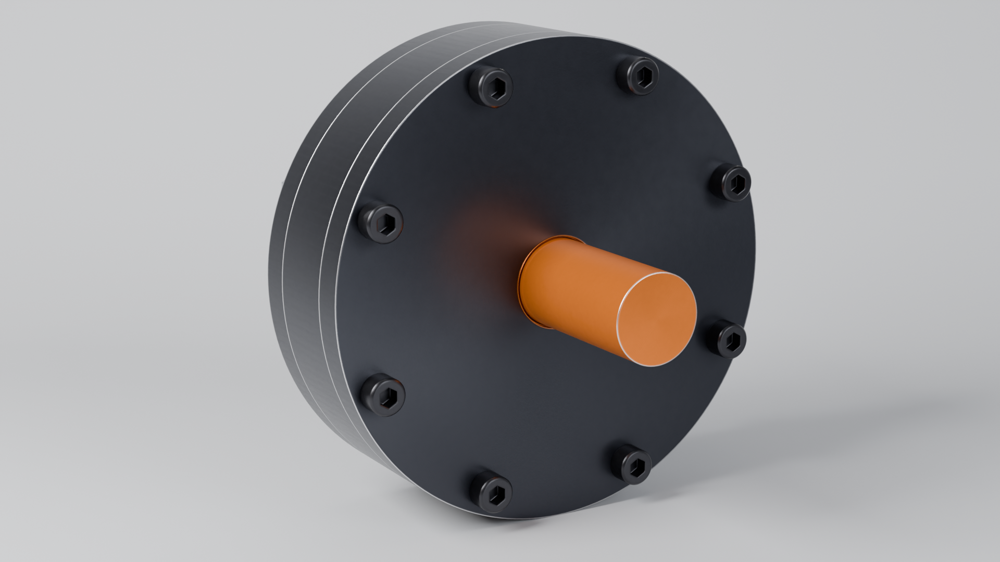
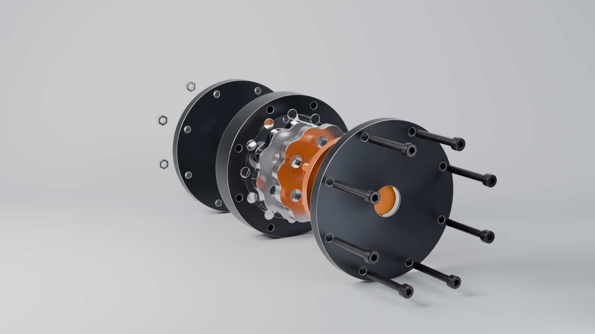
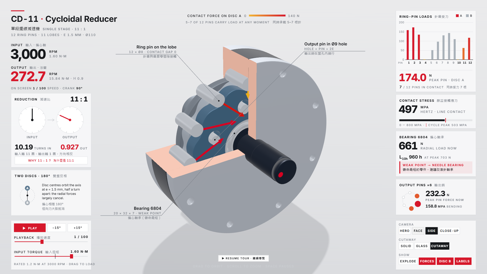

Interactive teardown
Explode, cut away the housing, watch per-pin contact forces and drag the input torque. Runs offline in one HTML file.
30-second product film
The finished reducer on a desk, its drawings, then every part going in along one axis and the stage running.
41-second tour of the interactive model
Key figures
| Ratio | 11 : 1 (12 ring pins, two 11-lobe discs at 180°) |
|---|---|
| Input | 3000 rpm, 1.2 N·m |
| Output | 272.7 rpm, 11.88 N·m |
| Pins in contact | 5–7 at any crank angle |
| Peak pin force / Hertz stress | 132 N / 436 MPa over a full revolution |
| Disc bearing (6804) | 527 N peak, L10 ≈ 2,275 h — the life-limiting part |
Full results: analysis.json
Renders




Engineering drawings
Third-angle projection, sections, balloons and parts list. Click a sheet for the PDF.